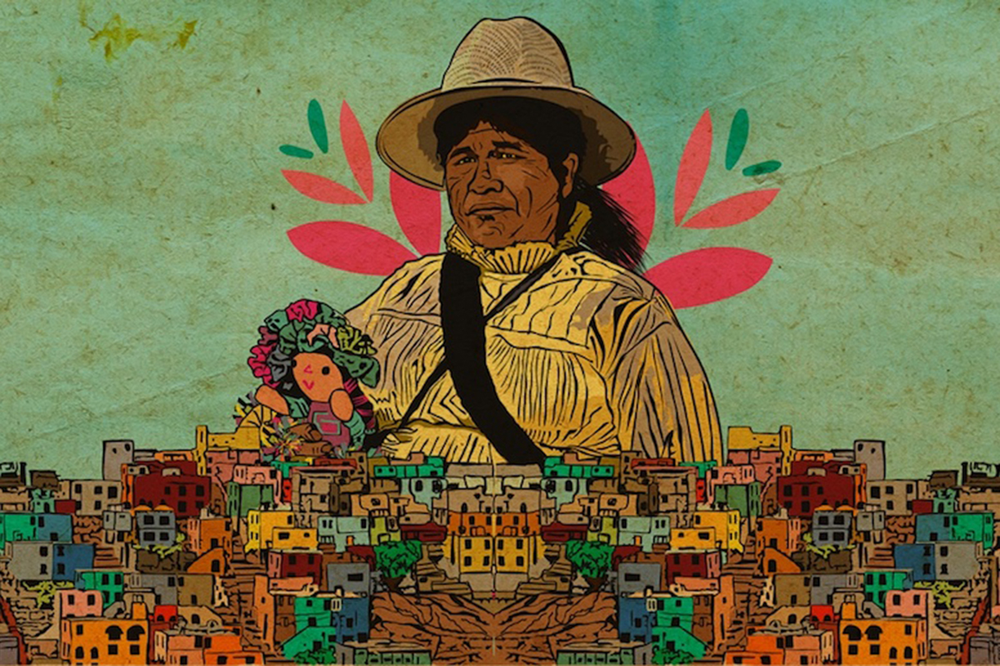

Ra 'budä hñä, pa 'na ya me nthe'ä, mbo Zäthe ja Ngä. Ja 'ngu ra 'budä, Zäthe hmä, hyats'i ja dehe, mföi, mfeni. Pero Ngä, gui ra 'bu, ya nthu nt'ä. Nu pa 'na, Zäthe hñä: "Nk'a, Ngä, ¿gut'i ga nthe'ä? Ma 'bu pa nzoki, ma 'bu pa 'yo". Ngä hmä: "Nk'a, Zäthe, nthe'ä ga ya nzoki. Nthe'ä ga nzä, pa mbot'i hmä, pa mbot'i 'bu". Zäthe ja Ngä ntha. Ja 'ngu, Ngä mbot'i ra Zäthe, ja Zäthe mbot'i ra 'bu. Pa 'na, hñähu ja dehe, nthe'ä mbot'i ra 'bu. Ntha, pa 'na, hñähu nu'bu, nu'bu ja dehe.

En un tiempo antiguo, el Maíz y el Fuego eran grandes amigos. El Maíz era dorado y abundante, y alimentaba a toda la gente. Pero el Fuego, que vivía solo en un lugar, estaba triste. Un día, el Maíz le dijo: "Hermano Fuego, ¿por qué estás tan callado? Ven conmigo a los campos, ven a las casas". El Fuego respondió: "Hermano Maíz, yo solo destruyo. Si me acerco a ti, te conviertes en humo. Si me acerco a las casas, las convierto en ceniza". El Maíz y el Fuego reflexionaron. Al final, el Fuego tocó un grano de maíz, y el Maíz se transformó. Desde ese día, la gente ya no come el grano crudo. Ahora, con la ayuda del Fuego, el Maíz se convierte en tortilla, en alimento verdadero. Juntos, encontraron su propósito.